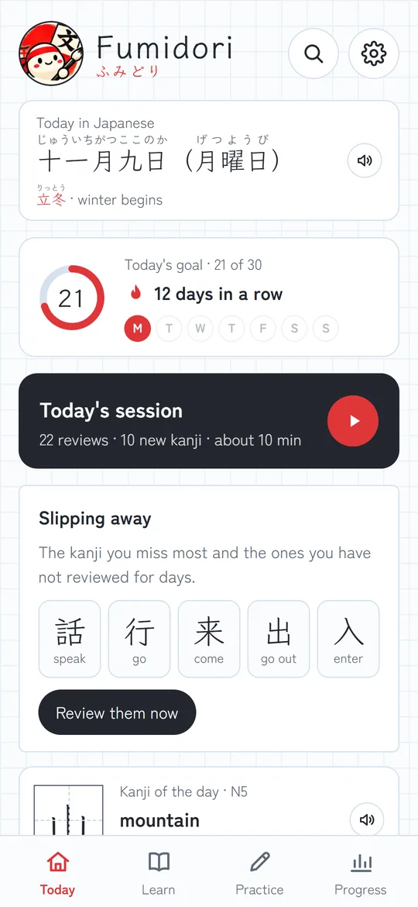
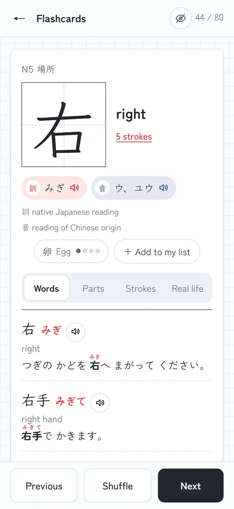
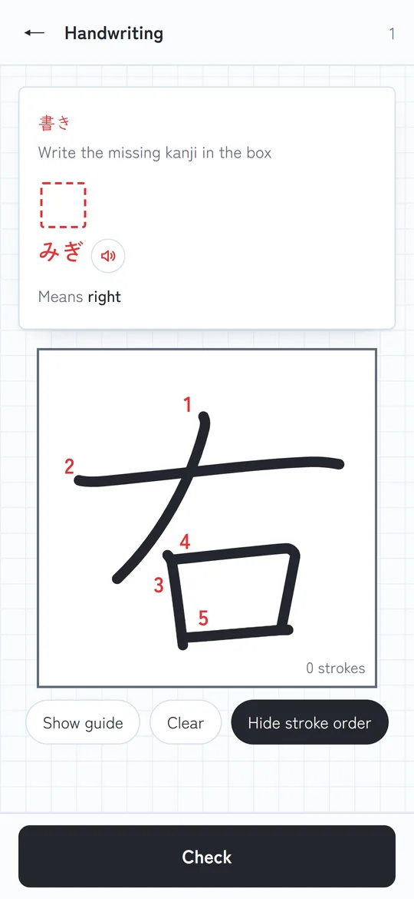
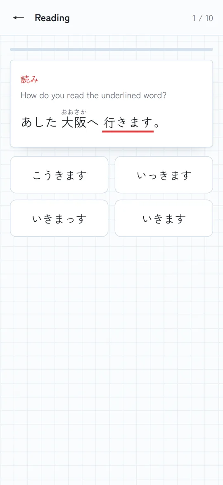
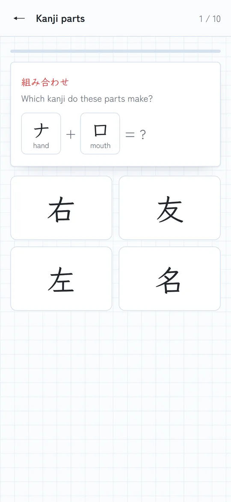
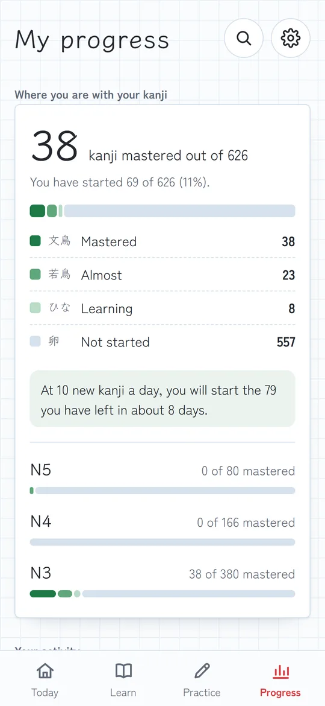

Kanji app for Android · English and Spanish
Really learn kanji
Fumidori ふみどり teaches you the kanji from N5 to early N3 by understanding their logic, writing them by hand and reading them in real sentences. Free, no ads and no accounts.


Everything you need for kanji
You learn each kanji by understanding it, writing it and using it, not just memorising it.
Complete flashcards
Meaning, readings, parts and radical, a memory tip, and words with sentences and furigana.
Animated stroke order
Every kanji is drawn stroke by stroke and numbered, with KanjiVG data.
Marked handwriting
Draw with your finger and the app compares your kanji with the model.
Learn the logic
Break each kanji into its pieces and train the ones that get mixed up: 休 and 体, 右 and 左.
Smart review
Every word comes back just before you would forget it, with daily limits so you never feel swamped.
Real-life kanji
Every card shows where you will see it: at the station, in the konbini, on a menu or in the street.
A plan for your goal
Tell us why you study and Fumidori decides which kanji come first and at what pace.
Just for me
Move through the levels at your pace, and it tells you when to start the next one.
For the JLPT
It works out how many new kanji a day you need to be ready for the exam.
At a school
Mark the kanji you see in class, or paste your teacher's list, and they come first.
To live in Japan
First the kanji on signs, at stations, in shops and on menus.
This is Fumidori




For Japanese language schools
Fumidori supports your students outside class, with the kanji you choose.
- The student chooses “I study at a Japanese school”and their class level. The app prepares their plan.
- The teacher creates a list of the week's kanjiin the app itself and shares it by LINE, WhatsApp or email.
- The student pastes the messageand those kanji come first in their practice and reviews.
- The student can create an image of their progress(streak, levels and class kanji) and send it to the teacher if they wish.
Information for schools
Two pages with everything your school needs to know, in three languages.
Shall we talk?
Write to us and we will tell you how to try it with your students.
Send an emailYour progress is yours
Fumidori does not collect, send or share any data. Everything is stored on your phone and it works offline.
Frequently asked questions
How much does it cost?
Nothing. Fumidori is free and has no ads.
Do I need the internet?
No. Everything works offline: the fonts, the kanji and the voice are inside the app or the phone.
Is there an iPhone version?
For now, Android only.
Which levels does it cover?
All of N5 and N4 plus early N3: 300 kanji. We are working on expanding it.
Which languages?
English and Spanish. You can switch in Options.